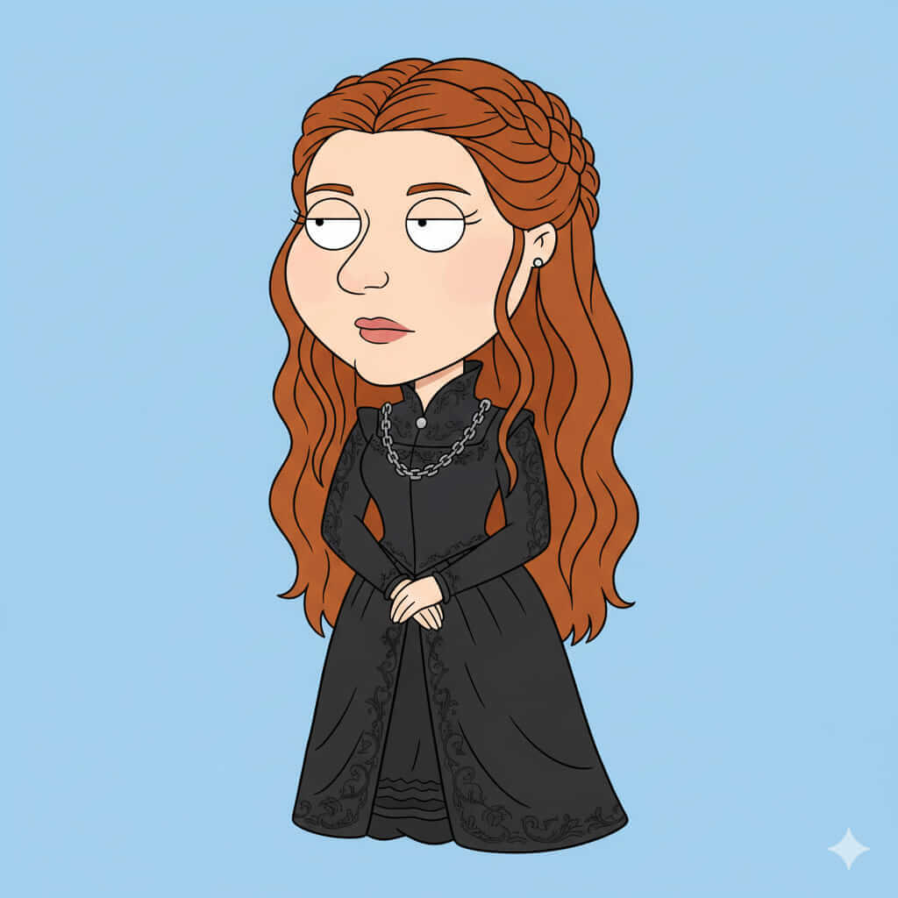

Serya Starfell
Historia
Serya Starfell creció en las frías tierras del norte, aprendiendo desde temprana edad que la verdadera fuerza no siempre reside en la espada, sino en la sabiduría y la diplomacia. Su educación incluyó tratados de leyes, protocolo y negociación, preparándola para ser la voz de su casa en los momentos más difíciles. Aunque su carácter es noble y paciente, ha aprendido a ser firme y resiliente frente a traiciones y conspiraciones, desarrollando una mente clara incluso en medio del caos.
Con el paso de los años, Serya se convirtió en un pilar para su familia y para los pueblos del norte. Su habilidad para resolver conflictos y formar alianzas estratégicas ha salvado innumerables veces la estabilidad de Starfell. Sin embargo, su mayor desafío será mantener la paz en Throonia mientras la guerra y la ambición de las grandes casas amenazan con destruir todo lo que ama. Su destino está entrelazado con el de su hermano Joren, con quien comparte la carga de proteger a su gente y preservar el honor del norte.
Casa y relaciones
Casa: Starfell.
Familia: Joren Snawd (hermano), linaje de guerreros y líderes honorables.
Aliados: Clanes del norte, casas menores leales a Starfell, diplomáticos del reino.
Enemigos: Targheris y Blackmaw, así como conspiradores internos que buscan desestabilizar la región.
Habilidades y personalidad
Templanza noble - Diplomacia natural - Resiliencia frente a la adversidad.
Personalidad serena, justa y estratégica, con un fuerte compromiso hacia su familia y su gente.